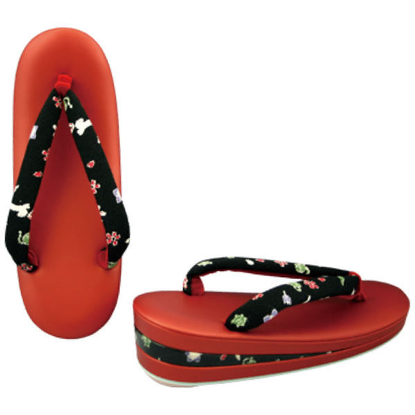

他社でお求めの品物につきましても承ります。
商品番号：243
一本手バッグ●必要生地 45cm着尺巾
●W20×H14×D9
■ポケット×2
■口金の色は金色、手は金属のメッシュです。
商品番号：262
一本手ボックス●必要生地 80cm着尺巾
●W27×H16×D10.5
■ポケット×3
商品番号：106
二本手革 ヒダ入り●必要生地 45cm着尺巾
●W23×H15×D7
■ポケット×2
■口金の色はべっ甲茶です。
■手、マチ、底─革の黒
商品番号：152
二本手革 ヒダ入り●必要生地 45cm着尺巾
●W22×H17×D7
■ポケット×2
■口金の色はべっ甲茶です。
■手、マチ、底─革の黒
商品番号：180
二本手革 アオリ●必要生地 45cm着尺巾
●W25×H19.5×D8.5
■ポケット×5（両サイドポケット×2）
■口金の色は黒色です。
■手、マチ、底─革の黒
商品番号：148
二本手革 アオリ●必要生地 45cm着尺巾
●W28×H17×D9
■ポケット×5（両サイドポケット×2）
■口金の色は黒色に金の飾り付です。
■手、マチ、底─革の黒
商品番号：319
クサリ付兼用●必要生地 40cm着尺巾
●W12（底部分）×H15×D7.5
■ポケット×2
■口金の色は金、銀のいずれかを指定してください。
商品番号：183
クサリ付兼用ヒダ入り●必要生地 50cm着尺巾
●W20×H15×D4
■ポケット×2
■口金の色は金色です。
商品番号：135
カカエ●必要生地 45cm着尺巾
●W26.5×H12×D6
■ポケット×2
■口金の色はべっ甲茶です。
商品番号：157
カゴ付きんちゃく角型（大）●必要生地 45cm着尺巾
●W19.5×H6（籠部）×D14
■カゴの色は黒です。
商品番号：332
きんちゃくマチ入り（子供用可）●必要生地 45cm着尺巾
●W15×H18×D15
■底は合皮の黒です。
商品番号：256
信玄袋ツメ付●必要生地 60cm着尺巾
●W24×H25×D4.5
※ひもの色を色見本よりお選びください。
バッグ類
商品番号：351
ファスナー付二本手アオリ型●必要生地 45cm着尺巾
●W29×H20×D11
■ポケット／マチの外×2、内側×3
■中央口上部ファスナー付き
商品番号：311
ショッピングバッグ（大）●必要生地 55cm着尺巾
●W29.5×H24×D9
■ポケット×1、ファスナー付×1
■手、マチ、底─合皮の黒、ベージュのいずれかを指定してください。
商品番号：258
利休バッグ（大）●必要生地 140cm着尺巾
●W29.5×H16×D11
■ポケット×3（両サイドポケット×2）
■ファスナーの色（黒・ベージュ・赤系・茶系）
商品番号：505
一本手バンブー●必要生地 60cm着尺巾
●W23×H21×D8
■ポケット×1、ファスナー付×1
■手の色はバンブーの茶、黒いずれかを指定してください。
札入れ・小銭入れ等
商品番号：168
小銭いれ ヒダリ●必要生地 20cm着尺巾
●W13×H18×D2
■口金の色は黒です。
■内側─仕切りあり。
商品番号：232
すきや袋●必要生地 35cm着尺巾
●W21×H16×D2
商品番号：323
カード入れ付財布●必要生地 21cm着尺巾
●W9×H18
■小銭入×1/札入×3/カード入×5
■内張─合皮の黒
商品番号：327
眼鏡入れ 横型●必要生地 20cm着尺巾
●W16×H6×D2.5
■マチ─革の黒
商品番号：234
タビ袋●必要生地 25cm着尺巾
●W13.5×H17.5
草履・下駄
※必要生地はサイズ表をご参照ください。
※出来上がりのかかとの高さは芯の高さプラス1cm程（生地の厚みによってかわります）高くなります。
※靴のサイズもお知らせください。
商品番号：77
三段重ね・横巻 天・ハナオ下合皮
商品番号：60
畳下駄 ハナオのみ生地

商品番号：56
男一段横巻とハナオ下合皮
商品番号：44
基本型横巻とハナオ下合皮
商品番号：37
小判一段ハナオのみ生地
商品番号：96
女子供横巻合皮とハナオ下本天

商品番号：42
小判三段・横巻 天合皮
商品番号：42
小判三段・横巻 天合皮
草履・下駄 サイズ表
草履用合皮生地色見本
合皮の生地見本となっております。下記より、お好きな色をお選び下さい。
あまり布加工 ご注文確認事項
※必要事項は、伝票の余白などにわかりやすく記入してください。（あまり布加工専用伝票はありません）
バッグ類
- 型（一覧表No.）を決定します。
- 必要生地の長さを確認します。
- バッグの口金の色や、持ち手の色を確認します。（口金のデザインは多少変わることがあります）
※ビニール加工はいたしません。布地のままです。ご了承ください。
ぞうり
- 型（一覧表No.）を決定します。
- ぞうりのサイズ、芯の高さをサイズ表より選びます。
- 必要生地の長さをサイズ表にて確認します。
- 合皮の色を、合皮生地見本より選びます（商品No.60のものは選べません）
ご注意ください！
- 布地は表地が表面になります。裏表がわかりにくい生地はお知らせください。
- 柄の出方はお任せください。
- 絽、紗、レースの生地はお受けすることができません。
- 地の状態（しわ、汚れ、変色など）によっては加工をお受けすることができない場合があります。
- 汚れや使い込まれた生地は加工に入る前にクリーニングをおすすめします。
- オーダー商品になりますので、出来上がり後のクレーム（イメージが違うなど）はお受けできません。また生地などの弁済もいたしかねますのでご了承ください。
- 加工期間は1ヶ月程度いただきます。加工内容によっては1ヶ月以上かかる場合もございますのでご了承ください。